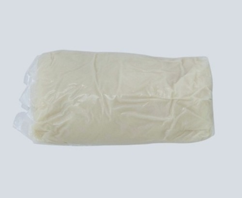

영어로 powdered wall paper glue입니다.
시중 도배풀 두 종류에요.
건식 가루도배풀(용량 200g, 500g), 밀가루 습식도배풀(용량 1kg, 7kg, 14kg)
가루풀은 운반, 보관이 수월합니다.
다만 풀을 만들 때 잘못 만들면 가루 풀이 제대로 풀리지 않고 뭉침 현상이 발생하게 되므로,
가루풀로 도배풀을 만들기 방법을 알고 난 후 사용하기 바랍니다.
밀가루 풀 습식풀의 경우에는 무겁고, 상온에서 오래 보관하거나 잘못 보관하면 곰팡이가 생길 수 있고,
오래되면 접착력이 떨어진다는 단점이 있어요
가장 대중적으로 사용되는 풀이기도 하고 가장 오래 사랑을 받은 제품은 습식도배풀이지만,
사용, 관리가 편해 건식 가루풀도 많이 쓰이는 추세입니다.